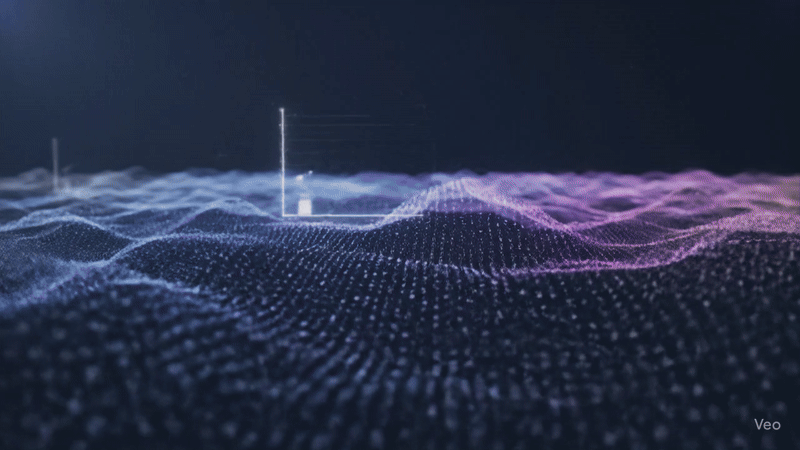
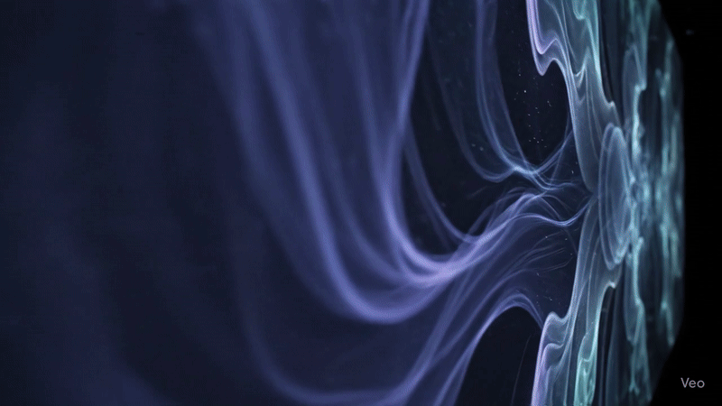
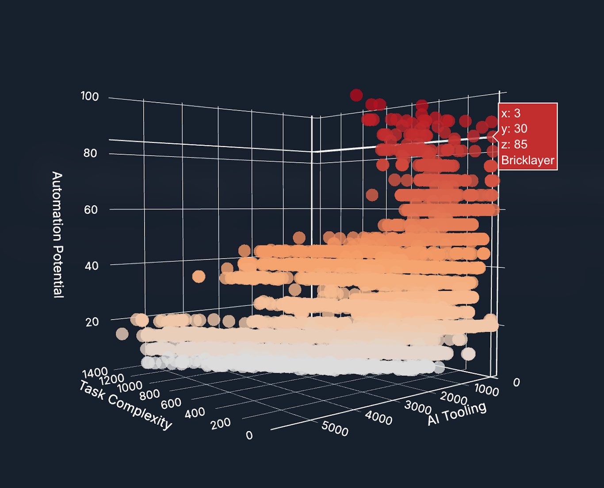
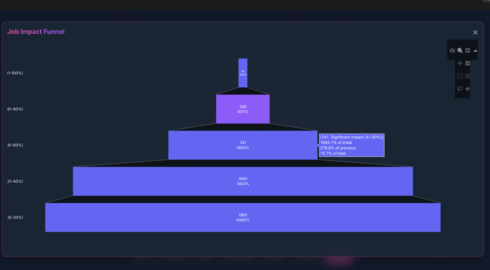
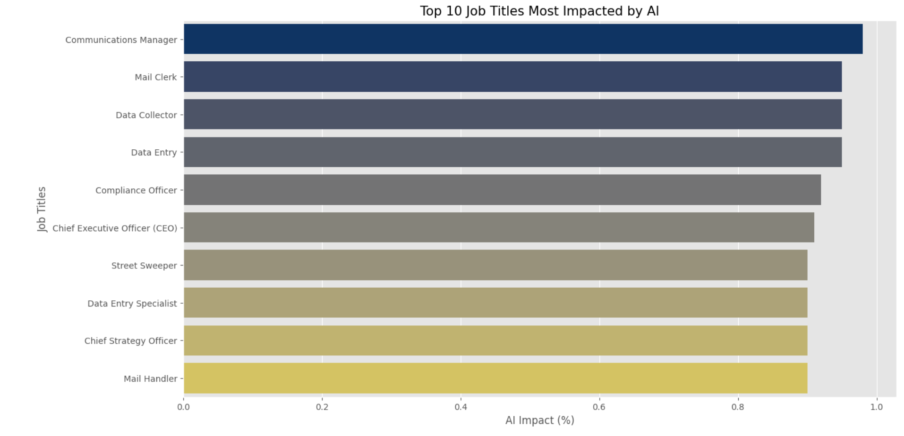
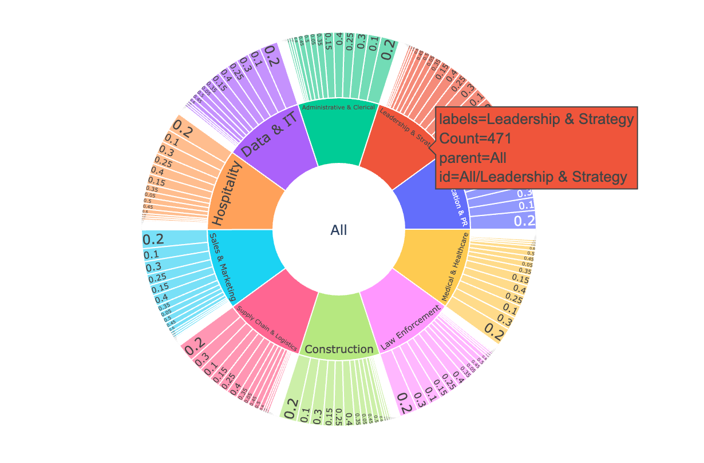
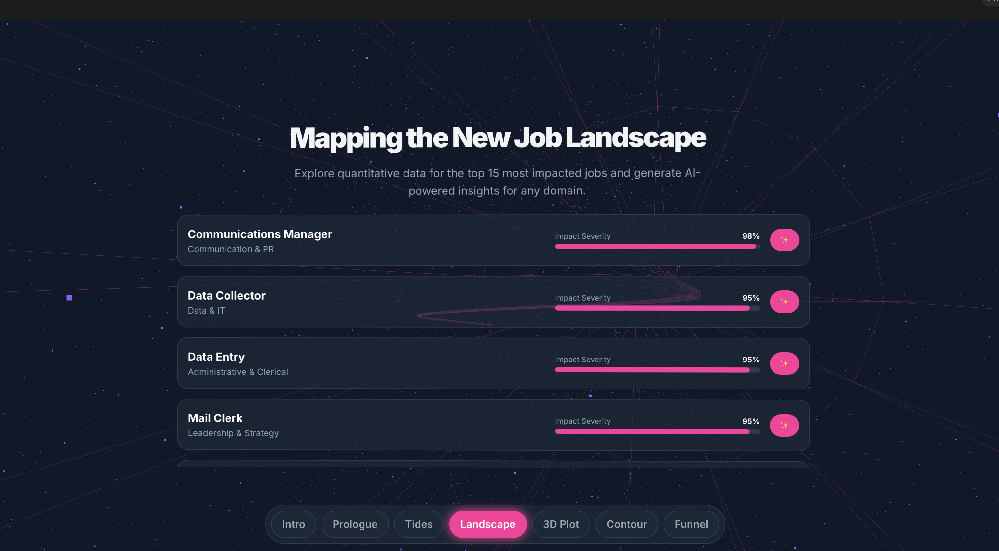

1. Artist Statement
"The Automated Age" is an interactive data visualization that explores the complex and often invisible effects of artificial intelligence on the global job market. Using a dataset on the influence of AI on various professions, the work translates abstract numbers and percentages into an immersive, narrative 3D experience. The goal is to encourage the viewer to reflect on how data can be used not only to understand the profound changes in our working world but also to feel and question them.
2. Concept & Inspiration
Core Concept
The central theme is the visualization of change—from the displacement to the augmentation of jobs by AI. Instead of just presenting dry facts, the aim is to create an emotional and intuitive connection to the data to make the debate about the future of work more accessible.
Inspiration
The primary inspiration for this project was the underlying research from the "Copy of AI impact on Jobs - Colab.pdf." Artistically, the project was inspired by the idea of telling a story through data and taking the viewer on a guided journey through the various facets of AI's influence, similar to a digital narrative.
Artistic Questions
- How can a complex, multi-layered dataset be translated into an understandable and engaging visual form?
- Can a data visualization evoke an emotional response beyond just presenting facts?
- What new perspectives on the future of work can arise from the interactive exploration of data?
3. The Medium: Data & Tools
The Data as a Medium
Dataset: "From Data Entry to CEO: The AI Job Threat Index." This dataset catalogs various job titles, the percentage of AI's influence, the number of human tasks compared to AI models, and the respective industry.
Artistic Rationale: This dataset was chosen because it provides a clear and quantifiable metric ("AI Impact") that is excellently suited for visual representation.
The Digital Canvas & Brush
The visualization was created as a web application using HTML, CSS, and JavaScript with core libraries like Three.js, Plotly.js, and D3.js.
4. Creative Process & Iterations
The creative process evolved step-by-step from a simple representation to a complex, narrative experience, marked by several key milestones.
Milestone 1: The 3D Scatter Plot
The initial idea was to represent the core data—tasks, AI models, and AI influence—in an interactive 3D scatter plot. This formed the basis for the later work.

Early iteration: The core 3D data scatter plot.
Milestone 3: Diversification of Visualizations
To make the story more varied, additional chart types were added, including a list view, a contour plot, and the funnel chart seen below.

The funnel chart shows job distribution across impact levels.

A bar chart highlights the top 10 most impacted jobs.

A bar chart highlights the top 10 most impacted jobs.
5. The Final Artwork
The final work is a fluid, interactive narrative that takes the viewer on a journey from an atmospheric introduction to a concrete list of the most affected professions, and finally to a series of interactive charts for self-exploration. The dark, space-themed aesthetic was deliberately chosen to create a futuristic and contemplative atmosphere.

The final "Job Landscape" section provides a clean, informative list.
6. Reflection & Future Directions
Personal Reflection
The biggest challenge was balancing a guided narrative with free exploration. It was important not to overwhelm the viewer with too much data at once, but still give them the freedom to make their own discoveries. Technically, combining CSS3D overlays with a WebGL scene and ensuring smooth performance was a key task.
Future Directions
The project could be expanded by connecting to a live API for up-to-date data, adding more visualizations to explore other correlations, or even creating a physical, room-filling installation.